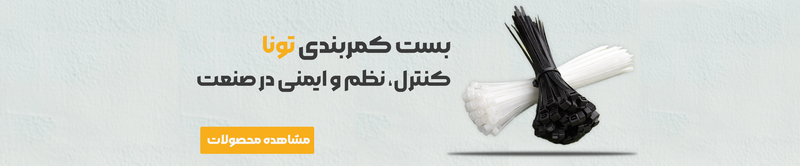

بستهای کمربندی یکی از پرکاربردترین اتصالات در صنایع مختلف هستند. از صنعت ساختمان و خودروسازی گرفته تا صنایع برق و کابلکشی، بستهای کمربندی نقش حیاتی در مهار و اتصال کابلها، لولهها و تجهیزات دارند.
در این مقاله قصد داریم به بررسی جامع انواع بست کمربندی، کاربردهای هر نوع، نکات مهم در انتخاب و مقایسه برندهای مختلف بپردازیم. با ما همراه باشید.
انواع بست کمربندی
بستهای کمربندی بر اساس جنس، اندازه و کاربرد به دستههای مختلفی تقسیم میشوند:
1. بست کمربندی فولادی گالوانیزه
این نوع بستها از فولاد با روکش گالوانیزه ساخته میشوند که در برابر رطوبت و خوردگی مقاومت خوبی دارند. مناسب برای استفاده در محیطهای مرطوب و صنایع ساختمانی.
2. بست کمربندی استیل 304 و 316
بستهای استیل 304 و 316 مقاومت بسیار بالایی در برابر زنگزدگی و خوردگی دارند. این نوع بستها برای صنایع دریایی، شیمیایی و محیطهای با خورندگی بالا مناسب هستند.
3. بست کمربندی پلاستیکی (نایلونی)
بستهای پلاستیکی سبک، اقتصادی و عایق الکتریکی هستند. این بستها برای مصارف عمومی، بستهبندی و کابلکشی داخلی مناسب میباشند.
جدول مقایسه انواع بست کمربندی
| نوع بست | مقاومت در برابر خوردگی | مقاومت کششی | قیمت نسبی | کاربرد اصلی |
|---|---|---|---|---|
| فولادی گالوانیزه | متوسط | بالا | متوسط | صنایع ساختمانی |
| استیل 304 | بسیار بالا | بسیار بالا | بالا | صنایع دریایی و شیمیایی |
| پلاستیکی | عالی (غیرفلزی) | متوسط | پایین | کابلکشی داخلی، بستهبندی |
نکات مهم در انتخاب بست کمربندی
- شرایط محیطی: اگر محیط مرطوب یا خورنده است، بست استیل یا گالوانیزه انتخاب کنید.
- وزن و اندازه کابل یا لوله: بست باید توانایی تحمل وزن مورد نظر را داشته باشد.
- دمای کاری: بستهای پلاستیکی در دماهای بالا ممکن است تغییر شکل دهند.
- نیاز به عایق الکتریکی: در صورت نیاز به عایق بودن، بستهای پلاستیکی گزینه مناسبی هستند.
- بودجه: بستهای استیل گرانترین و بستهای پلاستیکی اقتصادیترین گزینه هستند.
راهنمای سایزبندی بست کمربندی
بستهای کمربندی در سایزهای مختلفی تولید میشوند. برای انتخاب سایز مناسب باید قطر کابل یا لوله را اندازه بگیرید و بستی با سایز کمی بزرگتر از آن انتخاب کنید. سایزهای رایج شامل 100×2.5، 150×2.5، 200×4.8، 250×2.5، 300×4.8، 550×7.6، 720×9 و 1020×9 میلیمتر هستند.
سخن پایانی
انتخاب صحیح بست کمربندی تأثیر مستقیمی بر ایمنی و دوام پروژه شما دارد. با در نظر گرفتن شرایط محیطی، نوع کابل و بودجه خود میتوانید بهترین گزینه را انتخاب کنید.
تیم تونا تولز آماده ارائه مشاوره رایگان برای انتخاب بهترین بست کمربندی متناسب با پروژه شماست. برای استعلام قیمت و مشاوره، با شماره 021-38024 تماس بگیرید یا از منشی هوشمند تونا تولز استفاده کنید.
نظرات کاربران (۳)
محمد رضایی
مقاله بسیار مفیدی بود. ممنون از تیم تونا تولز. لطفاً در مورد انواع پرس هیدرولیک هم مقاله بنویسید.
سارا کریمی
برای خرید بست استیل 304 سایز 250*2.5 چطور میتوانم اقدام کنم؟
دیدگاه خود را بنویسید